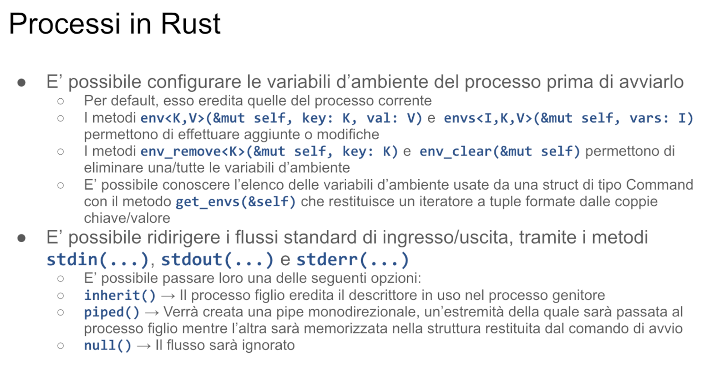

Processi - Malnati 27
Indice
1. Recap

Abbiamo visto come un processo sia l'unità che il sistema operativo utilizza per incapsulare l'esecuzione di un programma, affidandogli uno spazio di indirizzamento indipendente.
I processi vengono creati con delle system call che sono molto diverse nel mondo di Windows e nel mondo Unix-like. Rust ci fornisce una versione standardizzata per la creazione di processi, che non lascia vedere la primitiva fork, ma ci fornisce direttamente già una versione in cui noi possiamo creare un processo e contemporaneamente reinizializzarne lo spazio di indirizzamento con un altro eseguibile.
1.1 La struttura Command


Quindi alla base della creazione del processo c'è sostanzialmente la creazione di un Command che fondamentalmente modella la parte di inizializzazione del nuovo processo. Si crea un Command con il costrutto new che vuole il nome di un eseguibile.
In realtà Command è un builder del processo, ovvero il processo viene generato al termine, nel momento in cui noi abbiamo configurato l'oggetto Command e invochiamo uno dei metodi che ne determinano l'avvio (Spawn piuttosto che wait).
Di base, la funzione new richiede il nome dell'eseguibile, poi possiamo popolare la struttura di lancio del nostro processo con gli eventuali argomenti passati individualmente con .arg() o passati collettivamente con .args() (in questo caso dobbiamo dare un array di stringhe). Possiamo popolare le variabili d'ambiente che userà questo processo mediante .env() (per una singola variabile d'ambiente con il suo valore), .envs() (per un gruppo di variabili d'ambiente con il relativo valore).
1.1.1 I flussi standard input, standard output e standard error

Possiamo soprattutto modificarne i tre flussi fondamentali. Ogni processo ha associato:
- Uno standard input — un file descriptor già aperto che rappresenta l'input naturale da cui il processo attinge
- Uno standard output — un file già aperto verso cui dirige le operazioni di uscita
- Uno standard error — verso cui dirige gli errori
Nel mondo Unix-like questi corrispondono ai file descriptor 0, 1 e 2. Nel mondo Windows corrispondono ad altre handle.
Il builder Command ci mette a disposizione tre metodi — stdin, stdout e stderr — che ci consentono di configurare come il processo gestirà input e output. Questi metodi accettano uno di tre possibili valori:
inherit— usa l'equivalente nel processo corrente (es:command.new(...).stdin(inherit)userà lo stesso standard input del processo corrente)piped— crea un canale di comunicazione:- Per stdin: il processo leggerà da una pipe che possiamo controllare
- Per stdout/stderr: il processo scriverà su una pipe da cui possiamo leggere
null— viene settato un descrittore chiuso/invalido:- In lettura: si ottiene subito end-of-file
- In scrittura: l'output viene scartato
2 Lanciare un processo

Come lanciamo il processo?
Un oggetto Command ci permette di configurarlo, ma a quel punto abbiamo solo configurato il processo, che non esiste ancora in quanto tale. Affinché venga effettivamente invocata la funzione associata al sistema operativo (la CreateProcess in Windows o la fork seguita da exec in Linux) dobbiamo attivare o il metodo status o il metodo spawn.
2.1 Il metodo status()
status() è bloccante: applicato a un Command fa sì che il processo venga effettivamente creato, venga eseguito e rimango bloccato fino a che quel processo non è completamente terminato. Quando il processo termina ottengo come risultato da status il codice di terminazione racchiuso in un Result.
Perché racchiuso in un Result?
Perché è possibile che quel processo non venga neanche costruito — se gli ho dato come eseguibile il nome di una cosa che non c'è, non è possibile creare il processo e potrei ottenere un Result che mi dice "Questa cosa non è neanche partita". Viceversa se è possibile farlo partire ottengo il suo status, cioè l'intero che normalmente definisce il risultato dell’esecuzione.
Lo status è una cosa più complessa. Nel caso di Windows è genericamente solo un numero (il valore ritornato da main o passato alla system call ExitProcess). Nel caso dei sistemi Unix invece è molto più articolato: è fatto di 16 bit, 8 dei quali rappresentano il codice di uscita effettivamente generato dal processo stesso, ma i restanti 8 hanno un'interpretazione più complessa come bit field, perché indicano possibili forme di terminazione dovute a fattori esterni — ad esempio il fatto che avete fatto kill di quel processo. Quindi, se il processo è terminato tramite un segnale, ottenete sull'exit status un codice che vi riporta quale segnale ne ha causato l'interruzione.
Quando creiamo un Command e invochiamo status(), il processo rimane in attesa fino alla terminazione, quando otterremo il risultato.
2.2 Il metodo spawn()
In altre situazioni vogliamo attivare il processo figlio mentre il nostro programma continua l'esecuzione. In questo caso usiamo spawn(). Chiamando spawn() viene avviata l'esecuzione del processo figlio in parallelo. Per conoscerne l'esito, dobbiamo utilizzare il valore restituito da spawn().
spawn() restituisce un oggetto di tipo Child, o meglio un Result<Child>, perché come prima è possibile che il comando specificato non esista e quindi non sia neanche possibile avviarlo. Se invece la creazione del processo ha successo, la struttura Child contenuta nel Result ci permette di interagire con il processo figlio.

*Cosa contiene la struttura Child?
*****All'interno troviamo i tre campi stdin, stdout e stderr, che rappresentano i flussi standard del processo figlio. Questi campi vengono inizializzati in base a come li abbiamo configurati prima della chiamata a .spawn().
Se per uno di questi flussi abbiamo specificato inherit(), allora il processo figlio condividerà lo stesso flusso del processo padre: in quel caso, non possiamo (e non ha senso) accedere ai campi stdin, stdout o stderr perché non ci danno alcun controllo diretto.
Al contrario, se abbiamo usato piped(), allora il relativo campo (stdin, ad esempio) conterrà l'altra estremità di una pipe, che possiamo usare per interagire con il processo figlio: ad esempio, scrivendo su child.stdin, possiamo fornire input al processo figlio; leggendo da child.stdout o child.stderr, possiamo ottenere il suo output o eventuali messaggi di errore.
All'interno della struttura Child troviamo anche l'identità del processo creato: il metodo id() ci fornisce il PID associato.
Abbiamo inoltre a disposizione due metodi di attesa:
wait()→ ci blocca fino alla terminazione del processowait_with_output()→ ci blocca e restituisce anche l'eventuale standard output configurato
Infine abbiamo anche a disposizione il metodo kill che ci dà la possibilità di interrompere la sua esecuzione. In effetti nel caso dei sistemi Unix corrisponde a inviargli il segnale 15, quello che ne chiede la terminazione graziosa — gli facciamo sapere che vogliamo che smetta e lui ha la possibilità di fare un catch di questo segnale e quindi decidere se vuole o meno. Nei sistemi Unix quando invece un programma si pianta, di solito l'altro modo è fare kill -9. Il segnale 9 comporta la deschedulazione da parte del sistema operativo di tutti i thread associati e la rimozione di tutte le strutture dati. È un'uccisione senza possibilità di replica da parte del processo stesso — viene eliminato dal sistema operativo.
C'è qualcosa di simile in Windows attraverso il task manager, dove potete scegliere tra terminare un processo oppure fare force termination. Quest'ultima ha un comportamento analogo al kill -9.

L'aspetto su cui ci concentriamo in questo momento, particolarmente rilevante, è legato al fatto che possiamo attivare dei programmi già esistenti sul nostro computer — che magari abbiamo scritto noi stessi, oppure sono eseguibili che il sistema operativo ci mette a disposizione (compilatore, linker o qualunque altra cosa) — e vogliamo controllarli in modo più interattivo.
È vero che una parte di controllo la esercitiamo passando dei parametri. Il compilatore normalmente riceve tutto quello di cui ha bisogno sui parametri (es: gcc -c myfile.c -o myfile.bin). Quindi la riga di comando spesso è sufficiente. In alcuni casi però non lo è — anzi, vogliamo beneficiare dalla possibilità di mandargli degli input custom per ottenere dei benefici.
Vediamo un esempio.
2.2.1 Esempio
Per capirlo, prendiamo confidenza con un comando presente sui sistemi Unix-like chiamato rev. È un comando molto semplice: rev legge dal suo standard input e scrive sullo standard output. In particolare, legge una riga per volta e la riscrive girata al contrario.

Se eseguo rev, il processo rimane in attesa aspettando input.
Se scrivo "ciao", risponde "oaic", e ritorna in attesa di un altro input.
Continua così fino a quando non riceve un end of file — a quel punto termina.
Questo è un semplice esempio di programma interattivo. Potremmo usare ls o altri comandi, ma ls non prende niente da standard input, quindi è meno utile per il nostro scopo.

Nell'esempio che esaminiamo, iniziamo popolando la struttura Child. Con Command::new("rev") vogliamo eseguire il processo rev. Gli forniamo in ingresso una pipe per potergli inviare dati, e il suo output viene diretto su un'altra pipe da cui potremo leggere ciò che scrive.
Non necessita di parametri aggiuntivi, quindi non usiamo .arg().
spawn() restituisce un Result che potremmo gestire con unwrap(), ma usiamo expect() per avere un messaggio più chiaro in caso di errore. A questo punto il processo è in attesa — proprio come quando abbiamo eseguito rev dal terminale, e lui aspettava di ricevere input.
L'input del processo lo accedo grazie al Child che ho ottenuto. Di conseguenza vado sulla struttura Child che mi è stata restituita da Command::new, accedo al campo stdin, e ne prendo possesso con .take.
.take mi serve perché ho bisogno di accedere all'estremità di ingresso della pipe. Ovviamente questo può dare un risultato di errore, perché? Perché se quello standard input non l'ho creato di tipo piped, non posso prendere nessuna estremità di accesso. E quindi facciamo anche .expect per gestire l’errore.
A questo punto ho lo standard input, ovvero ho il punto in cui posso scrivere affinché lui legga. Quindi tutto quello che scriverò sull'oggetto così chiamato stdin sarà ciò che questo programma legge.
Quindi in questo caso cosa faccio? .write_all, quindi prendi il buffer che ti sto passando e che buffer ti passo? Ti passo "hello world" come stringa trasformato in byte e quindi lui si vedrà "h" è 58, "e" è 65 eccetera, e così via fino al fondo.
Quindi vedrà questa sequenza di byte, dopodiché .expect e quindi lui ha cominciato a mangiare questa riga, verifico di esserci riuscito e quindi faccio l'unwrap.
Dopodiché lui probabilmente avrà già preso questa stringa e l'avrà già anche girata al contrario. E poi aspetterà la riga successiva perché, come abbiamo visto prima, rev va avanti e se gli diamo mille righe ciascuna di queste la prende e la gira al contrario.
Di conseguenza per fare in modo che lui smetta facciamo drop(stdin), chiudendo la mia estremità della pipe. Lui che cercherà di leggere, riceverà un end of file e ricevendo questo end of file capirà che ha finito. Questo mi permette, a questo punto, di poter fare let output = child.wait_with_output. Quindi, benissimo, adesso che gli ho mandato tutto quello di cui potevo aver bisogno, posso andare a vedere cosa mi ha dato in uscita.
E di conseguenza prendo dalla struttura output, &output.stdout.
output contiene sia il suo standard output che il suo standard error. E me li restituisce sotto forma di vettori di u8, quindi vettori di byte. In questo caso io prendo il vettore di byte chiamato standard output e lo converto in una stringa. Converto in una stringa, ma lui a priori dice "Quello lì per me è un array di byte, non sono certo che sia una stringa ben formata UTF-8. Vabbè, provaci, alla peggio la aggiusti”. Per questo è from_utf8_lossy, nel senso che lui fa in modo, se trova delle combinazioni inadeguate, le butta via e le sostituisce con dei caratteri che mi segnano il fatto che lì ha trovato qualcosa di incomprensibile. Quindi non si rompe.
A questo punto ho una stringa, anzi ho un Cow (copy on write) di stringa, ma fa lo stesso, un'ottimizzazione che fa lui, e la stampo. E poi vado a verificare che mi sia venuto effettivamente "hello world" girato al contrario e c'è l'assert finale.

Nota: qui abbiamo scritto direttamente write_all. Questa tecnica funziona nel momento in cui voi dovete mandare poca roba. Se io qui avessi dovuto mandargli un testo un pochino più ampio che non soltanto "hello world", cosa poteva succedere? Poteva succedere che io gli mando un po' di byte, ma lui non li legge subito, perché in mezzo ci sarà un buffer. Questo buffer si riempie fino a un certo punto, dopodiché se lui non è veloce a leggere, io cerco di scrivere ancora. Ma lui non riesce a prenderselo. E di conseguenza siamo bloccati.

Allora, per evitare questa situazione, l'alternativa a fare questo mestiere è racchiudere quest'operazione in un thread. E lo facciamo con move, in modo tale che lui prende stdin qua dentro.
Cosa succede se io lo metto in un thread?
A questo punto posso gestire un testo anche lunghissimo senza problemi, perché questo thread opera parallelamente alla parte della wait_with_output. Il processo legge dall'input, lo converte e lo scrive sul suo output continuamente. Tuttavia, se gli mando una grande quantità di dati, a un certo punto non riuscirà più a scrivere sull'output perché nessuno sta leggendo dall'altra parte.
Allora, facendo in questa maniera io rendo concorrente il feeding dei dati con l'acquisizione dell'informazione. E questo me lo sblocca. Così sono tranquillo che, indipendentemente da quanto sia la mole dei dati che sto inviando, questi verranno passati in parallelo all'operazione di attesa dopo, eccetera.
Di questo thread non faccio il join per un motivo semplice: di fatto io riuscirò a raccogliere l'intero output solo nel momento in cui quel thread avrà finito. Quindi è automatico che quando arrivo alla riga dove c'è scritto assert, quel thread è finito. E di conseguenza non mi interessa fare la join in modo esplicito.
3. Terminare un processo

Vediamo due cose sull'exit code. Io posso in qualunque momento interrompere un programma, perché i sistemi operativi.
Un processo può terminare se stesso in qualunque momento, grazie al fatto che i sistemi operativi mi offrono una system call opportuna. In Windows c'è ExitProcess, in Unix c'è exit. Fanno più o meno lo stesso lavoro. Entrambe accettano un intero. Il modo con cui trattano questo intero è un po' diverso.
std::process::exit accetta un numero intero e causa la terminazione del processo. La terminazione del processo comporta, come dicevamo, l'immediata uccisione di tutti i thread esistenti, che si bloccano lì dove sono. Quindi se stavano scrivendo un file, quel file resta scritto per metà. Non hanno modo di reagire, non c'è nulla che si possa fare. Questa va chiamata, da parte del programmatore, in quelle situazioni in cui si abbia la ragionevole certezza che non si fanno dei danni.
exit ci dà la possibilità di comunicare un qualunque codice di risultato del processo.
In alternativa c'è una funzione simile che si chiama abort. È l'equivalente di terminate in C. Analogamente a exit comporta l'uscita immediata del processo. A differenza di exit non ci consente di indicare un codice custom di errore, ne mette uno lui di default, che è interpretato in modo coerente dal sistema operativo, come interruzione anomala. Serve proprio per significare "Questo programma è morto in modo anomalo". Non c'è rischio di poter farlo interpretare diversamente. Chiaramente avendo lo stesso comportamento di exit va chiamato quando pensiamo che sia il male minore. Le conseguenze, cioè della terminazione brutale, non abbiano altri impatti.
Poi abbiamo la macro panic!, che causa invece la terminazione del thread corrente — non bruscamente, ma forzando la contrazione dello stack fino a tornare all'inizio.
Il fatto che forzi la contrazione dello stack significa che tutte le variabili locali presenti sullo stack che implementavano il tratto Drop (e di conseguenza avevano un distruttore associato), questo tratto Drop venga eseguito. Quindi, se ho adottato correttamente il pattern RAI, la mia struttura si pulisce in modo concreto.
Notate che se panic! viene invocato su un thread secondario — a differenza di quello che succede in C++ dove una eccezione lanciata su un thread secondario comporta la contrazione dello stack, ma anche la terminazione del processo perché al cuore della funzione che crea i thread viene messo, prima di invocare il codice dell'utente, viene messo un try{...}catch{ // ... std::terminate }. Ovvero, se questo thread muore anomalamente, il processo termina, chiamando l'equivalente dell'abort. Quindi termina con un codice di errore che indica il fallimento.
In Rust non è così. Se un thread secondario panica, lui si toglie dei piedi, svanisce, tutto il suo stack si contrae, le variabili vengono distrutte correttamente, ma il processo resta vivo.
La condizione di panico può essere poi letta: se qualcuno fa il join della handle del thread che ha panicato, otterrà una condizione di errore sul join, e la condizione di errore racconterà fondamentalmente il messaggio associato al panic.
Questo se è un thread secondario. Se invece il panic avviene sul thread principale, il processo termina. Perché? Perché il processo principale parte in un contesto che è definito dalla C runtime library, che fondamentalmente racchiude l'esecuzione di main in un blocco del tipo try{...}catch{exit}. Quindi la presenza di questa exit fa sì che se il thread principale panica, esce.

Se io ho creato un altro processo, posso essere interessato a sapere come finisce. Se il processo io l'ho creato dentro Rust, ho la struttura Child associata, e su questa struttura posso invocare i metodi come wait, piuttosto che wait_with_output, che mi danno la possibilità di avere accesso al suo codice di uscita. E di rimanere bloccato fino a che questo processo non è terminato.
Se il processo non l'ho creato dentro Rust, ma è un processo che esiste, ad esempio magari ho visto tramite ps che esiste il processo numero 74, e vorrei sapere quando il processo numero 74 finisce, come faccio? Di base, i singoli sistemi operativi mi danno uno strumento per farlo. Ci sono system call apposite. Sono un po' diverse al solito.
Sotto Windows esiste WaitForSingleObject. Esiste anche la sua funzione sorella che si chiama WaitForMultipleObjects.
WaitForSingleObject accetta una handle di un oggetto aspettabile. È una funzione complessa, si usa per un mucchio di cose: si usa per sapere se un processo termina, si usa per sapere se un mutex è libero, si usa per sapere se è possibile scrivere su un file. È una funzione estremamente versatile. La differenza tra single object e multiple object, come potreste intuire, è che in un caso gli passate solo una handle, nel caso di multiple gli passate più handle. Ma nel caso di multiple gli passate anche un flag che specifica se voglio che tutti quelli che gli ho passato siano finiti oppure che uno qualunque di questi siano finiti. Quindi avete la possibilità di controllarlo.
Nel caso di Linux le cose sono diverse e qui avete a disposizione tre comandi distinti: wait, waitpid, waitid, che sono legati al mantenimento della struttura parent-child tra processi che nel mondo Unix è particolarmente rilevante. Windows invece, non avendo questa relazione, permette che chiunque aspetti chiunque altro senza grossi problemi.

Che differenza c'è tra queste funzioni?
wait funziona così: controlla i propri processi figli. Se il processo non ha creato figli, o se tutti i figli sono già stati gestiti, wait ritorna -1 per indicare che non c'è nulla da attendere. Se invece esistono dei figli attivi, la chiamata si blocca finché uno qualunque di questi sottoprocessi non termina. A quel punto viene restituito il PID (Process ID) del figlio terminato. Per esempio: se hai due figli con PID 27 e 54, quando chiami wait il processo attende finché uno dei due non termina. Se termina il processo 27, wait restituisce 27.
Nel fare questa operazione qua non solo mi fa aspettare fino a che uno dei figli finisce, ma provvede anche ad attribuire al processo corrente tutte le metriche legate al processo figlio. Se quel processo figlio ha fatto delle operazioni di I/O, i miei contatori di I/O vengono incrementati della quantità di I/O fatta dal figlio. Se quello lì ha usato 12 milioni di cicli di CPU, i miei cicli di CPU vengono sommati a questa cosa qua.

waitpid, viceversa, è una funzione mirata a un singolo figlio. Mentre wait aspetta il prossimo, finché c'è, waitpid dice "io voglio aspettare esattamente questo qua".
Quindi siccome fork ci ha restituito il PID del figlio creato, e quindi se abbiamo fatto dei figli sappiamo chi sono, noi possiamo mirare l'attesa di un figlio specifico con waitpid. E in questo rimaniamo bloccati fino a che quel figlio lì non termina, quando poi quel figlio termina otteniamo il suo status e eventuali altre informazioni.
3.1 Stato terminale di un processo in Linux

Che cosa c'è nello status? Le funzioni di uscita accettano un intero 32 bit, e quell'intero 32 bit è completamente accessibile nel mondo di Windows. Nel mondo di Linux, in realtà, è limitato a soli 8 bit. E il valore che ci viene restituito dall'exit-status è fatto di 16, che vanno interpretati secondo questa tabellina:
- Se il figlio è terminato normalmente, nel byte più significativo ci troverò il suo codice d'errore. E nel byte meno significativo ci leggo 0.
- Se il figlio è terminato a seguito di un segnale, ad esempio avete fatto kill del processo, nel byte più significativo leggete 0, e nel byte meno significativo leggete il numero del segnale (es. 15 per una kill normale).
Alcuni tipi di segnali possono causare il dump della memoria.
Cos'è il dump della memoria?
Sostanzialmente un istante prima di distruggere lo spazio di indirizzamento, il sistema operativo copia tutto il contenuto dello spazio di indirizzamento del processo che ha ricevuto il segnale, dentro un file, che si chiama core.
Perché serve? Perché vi permette di avviarci sopra un debugger e andare a vedere cosa c'era lì dentro. Tipicamente i segnali che possono causare il core dump sono i segnali come segv, segment violation — voi magari avete cercato di leggere da un indirizzo che non esisteva, a quel punto il sistema operativo vi blocca, uccide il processo col segnale segment violation e fa il core dump. Per segnalarvi che il core dump è avvenuto, setta il bit più significativo del secondo byte.
A volte, voi avete un programma che produce un mucchio di output. Magari vi sarà capitato di fare CTRL+S.
Cosa fa CTRL+S? CTRL+S è un segnale di pause. Blocca lo svolgimento del processo corrente, per darvi la possibilità di capire cosa sta facendo. Non lo ha ucciso, lo ha solo sospeso, lo ha marcato tutti i suoi thread come non schedulabili. E di conseguenza, sta fermo lì dove è arrivato.
Cosa si fa quando si batte CTRL+S? Per far riprendere il vostro programma, dovete battere CTRL+Q. CTRL+Q lo sblocca, lo fa ripartire esattamente dove era. Cioè, informa lo scheduler che tutti i suoi thread possono tornare a fare quello che dovranno fare. E di conseguenza, voi vedete che va avanti.
Queste due indicazioni possono essere ricevute. E in questo caso, potete sapere che lui era bloccato, e vedete sul byte più significativo l'indicazione di quale segnale lo ha bloccato, e nel byte meno significativo vedete 7F. Viceversa, se è stato continuato da un segnale, leggete FFFF, tutti uno. Questo vi dà idea di cosa sta capitando lì dentro.
3.2 Orfani e zombie

Se un processo figlio muore prima che il padre abbia chiamato la wait o waitpid, il figlio diventa uno zombie.
Se il processo padre finisce prima dei figli, i figli vengono automaticamente riassegnati a init: il processo numero 1.
Nella struttura di Unix, il processo numero 1 si chiama init, ed è quello che dà origine a tutto il sistema. Quindi diventano figli di 1. Infatti, init passa la sua vita, dopo aver inizializzato il sistema, ad aspettare, chiamando wait.
Viceversa, se un figlio termina prima che il padre ne abbia chiamato la wait, quel figlio diventa uno zombie. Cosa vuol dire? Vuol dire che non può essere rilasciata tutta la sua informazione. Ad esempio, il codice che ha restituito devo tenerlo lì da qualche parte, perché ad un certo punto il padre ne farà una wait, e vorrà sapere com'è finito sto figlio.
Quindi, il sistema operativo rilascia lo spazio di indirizzamento, ma non rilascia alcune delle strutture dati interne che ha associato, fino a che qualcuno non ne fa la wait e si prende carico di questi risultati.
Se fate ps, a volte ps -e o qualcosa del genere, che vi elenca tutti i processi che sono in esecuzione sulla vostra macchina, troverete una colonnina dove c'è lo stato del figlio. Alcune di queste righe potrebbero contenere una z: sono i processi in stato di zombie.
4. Trasferire dati tra processi diversi

Quando due processi hanno bisogno di parlarsi, le cose sono più complicate di quello che sarebbe quando due thread devono parlarsi. Se due thread devono parlarsi, sfruttano il fatto che abbiamo una memoria condivisa. Quindi, se io ti passo l'indirizzo di un dato, tu lo vedi. Nessun problema.
Quando invece due processi devono parlarsi, siccome lo spazio di indirizzamento è completamente separato, il fatto che da me l'indirizzo si chiami 3b7f, non vuol dire assolutamente nulla da parte tua. Quindi non possiamo comunicarci gli indirizzi.
Di conseguenza, se due processi devono scambiarsi informazioni è necessario passare dal formato interno che ciascuno dei due utilizza (che è fatto come vogliamo, in base all'utilità che ci serve), ad una rappresentazione esterna, utile per poter essere trasferita in qualche modo da un'altra parte e riletta.
È il problema, ad esempio, che avete con le immagini: le immagini sono strutture binarie che hanno una serie di informazioni al loro interno. Poi le immagini, da un processo all'altro, ad esempio quando un browser carica un'immagine, non carica l'immagine la bitmap pura, carica un png o un jpeg o un gif.
Perché? Perché queste, al di là del fatto che sono compressi e quindi pongono un'ottimizzazione dal punto di vista del resto, hanno una struttura riconoscibile facendo dei riferimenti che sono privi di puntatori. Internamente un JPEG è una struttura alquanto articolata, che:
- suddivide l'immagine in macro blocchi 16x16
- singoli macro blocchi sono divisi in 4 blocchi 8x8
- ciascun blocco 8x8 è rappresentato con la trasformata discreta di coseni
- c'è un vettore di quantizzazione
È una struttura alquanto articolata che permette la compressione dell'immagine. Ma questa struttura è impacchettata in un modo che non abbia nessun riferimento alla memoria, agli indirizzi di memoria, in modo tale che possa essere mossa da una parte all'altra.
Quando il vostro browser riceve un JPEG, lo spacchetta, lo trasforma in un'immagine rappresentata come meglio crede, e poi la mostra sul video in modo che sia visibile. Questo significa che passare da un processo all'altro richiede un processo di serializzazione, in cui:
- traduco il mio formato interno in uno adatto a essere spostato
- tramite qualche meccanismo lo faccio arrivare a destinazione
- chi lo riceve deve fare l'operazione duale, l’unmarshalling (la deserializzazione), che trasforma dal formato esterno di nuovo a quello interno, che può essere molto diverso dall'originale, non ha nessuna importanza
I processi di natura loro sono separati, ma i sistemi operativi ci mettono a disposizione alcuni meccanismi, che prendono il nome di IPC (Inter Process Communication), che permettono di parlarsi. Ce ne sono vari, purtroppo Windows li ha molto diversi da Linux e Unix in generale. Noi ne vediamo velocemente due: le code di messaggi e le pipe.
4.1 Code di messaggi
Permettono a più processi mittenti di inviare messaggi di dimensione variabile verso un unico destinatario (il proprietario della coda). Un processo può inviare un blocco da 5 byte, un altro da 45 byte, un altro ancora da un megabyte e mezzo - la dimensione non è rilevante. Il sistema operativo gestisce l'impacchettamento dei messaggi, e il destinatario li riceve uno alla volta, rispettando rigorosamente l'ordine di arrivo.
Dopodiché deve occuparsi di capire cosa c'è scritto dentro, quindi chi codifica questa cosa avrà scelto di imbustare questo messaggio in un modo coerente. All'interno di una coda di messaggi possiamo mandare delle unità che hanno una dimensione variabile, quindi non siamo obbligati a renderle tutte uguali, che vengono lette atomicamente. Quindi io mando un messaggio, quello lì va in coda, quando sarà il suo turno viene prelevato e viene letto tutto.
4.2 Pipe

La pipe è molto più a basso livello, non ha il concetto di messaggio: è semplicemente un tubo dentro cui scorrono dei byte.
La pipe ha un solo mittente e un solo destinatario, uno che inietta di qua e uno che preleva dall'altra parte. La segmentazione dei messaggi all'interno è frutto di una convenzione. Nell'esempio che abbiamo visto prima col comando rev la segmentazione è fatta sui new line, decidendo che quelli che ci mandiamo non sono dei byte e basta, ma sono delle stringhe, e per queste stringhe usiamo il new line per indicare la fine della stringa. È una convenzione però, bisogna che mittente e destinatario la seguano correttamente.
All'interno della pipe noi possiamo mandarci, seguendo convenzioni diverse, cose diverse. Potremmo decidere ad esempio che i primi 4 byte rappresentano sempre la lunghezza di un blocco che viene dopo. Chiaramente una cosa del genere richiede che io l'informazione di lunghezza la comunichi per prima, in modo tale che chi riceve:
- prima sa che deve leggere almeno 4 byte, che rappresentano la lunghezza
- una volta che li ha ricevuti sa che deve ricevere tanti byte, quanti sono scritti lì dentro, e sarà il primo messaggio
Poi di nuovo cercherà di leggere altri 4 byte, quella sarà la nuova lunghezza, e poi cerca di leggere un altro blocco, e così via.

Ci sono primitive diverse in realtà per fare questa cosa qua, e anche il comportamento è un po' distinto. In Windows è possibile fare delle pipe bidirezionali, di base in Linux le pipe sono monodirezionali.

Come le vediamo in Rust? Alcune librerie esterne ci vengono messe a disposizione per aiutarci un po'. Qui la grossa difficoltà è che il livello di astrazione offerto da Windows in generale, e offerto da Unix in generale, è molto molto distante, e quindi è estremamente difficile dare delle primitive, omogenee, che vadano bene da una parte all'altra.
Qui vediamo un esempio relativamente semplice, in cui creiamo due comandi sul sistema operativo: il primo genera dell'output, che viene mandato al secondo tramite una pipe, che viene raccolto dal nostro programma Rust tramite un'altra pipe.
Come lo facciamo?
Viene fatto un Command::new con echo, e passandogli come argomento una stringa.
echo prende la stringa che gli passiamo sulla command line, e la stampa. La stampa sul proprio standard output. Il problema è che lo standard output di echo, lo mettiamo in una pipe.
Facciamo partire questa cosa, poi andiamo a prenderci l'uscita di questa pipe, echo_child.stdout, e su questa uscita la usiamo per creare l'ingresso della pipe successiva, per cui creiamo un secondo comando, sed (stream editor), che dice "Cerca in tutte le righe che saranno nel tuo standard input. Se trovi la sequenza tpyo, sostituiscila con typo".
Leggi dall'uscita di quello prima, e scrivi su un'altra pipe. Facciamo partire anche questo con spawn.
Poi, prendiamo un'ulteriore uscita di questa pipe, let output = sed_child.wait_with_output, e direttamente la stampiamo. In questo caso, andiamo a verificare che contenga la sequenza corretta.
Questo ci fa vedere come noi possiamo, da Rust, organizzare catene di comandi.

Le cose che mettiamo su una pipe, di natura loro, sono byte. Se noi possiamo prendere delle stringhe, le stringhe le facciamo come sequenze di byte, ci sta. A volte però, noi vogliamo passare dei dati più strutturati. Il modo più facile è usare serde. serde è un crate che ci fa la serializzazione, e la deserializzazione.
In particolare, serde ci offre la macro derive, che ci permette di generare automaticamente il modo per serializzare una struct.
Serializzarla in che modo?
Oltre a includere serde, possiamo includere delle sottolibrerie di serde, come serde_json, che è specializzato nel generare del json, e nel trasformare del json in un'altra struttura.
Oppure serde_xml, che è specializzato nel trasformare in xml.
serde è una famiglia enorme di programmi, che ha capacità di serializzare e deserializzare in tantissimi formati. Alcuni molto conosciuti, altri un po' più strambi.

Il crate interprocess cerca di mettervi a disposizione delle funzionalità omogenee tra Windows e Linux.
Attenzione: fa quello che può, proprio perché ci sono delle cose che sono così diverse concettualmente, è molto difficile da gestire. Per cui, in quelle situazioni, occorre frantumare il codice sorgente e dire "quando compilo sotto Windows metto certe cose, e quando compilo sotto Unix ne metto delle altre". Quindi, creare dei programmi con versioni diverse, o perlomeno con delle catene di costruzione diverse.
Nel caso specifico di Linux, c'è un ulteriore crate che è lo zbus, che vi dà accesso al D-Bus.
D-Bus è una struttura che esiste all'interno di Linux, che permette a componenti molto diversi di mandarsi messaggi strutturati con tutta una sua semantica associata.